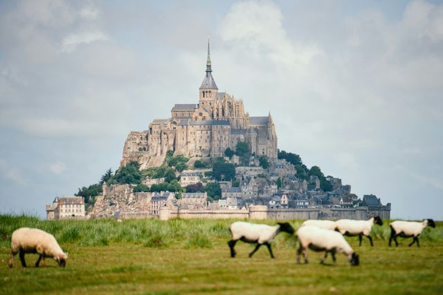
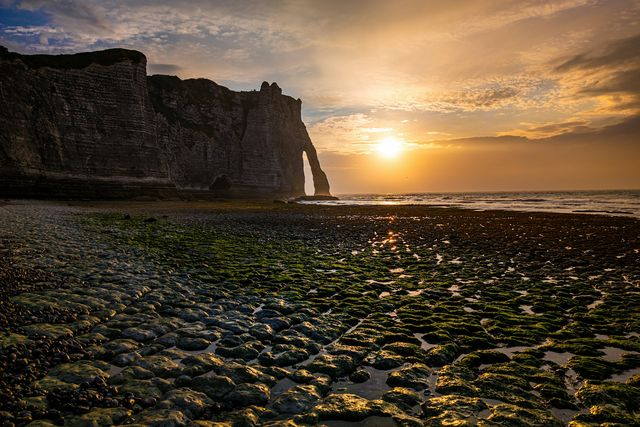
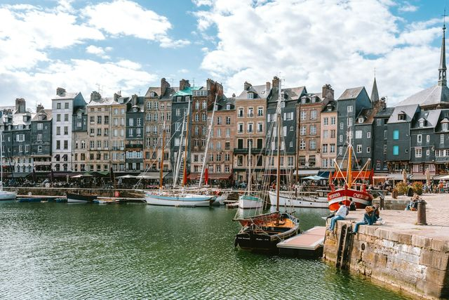
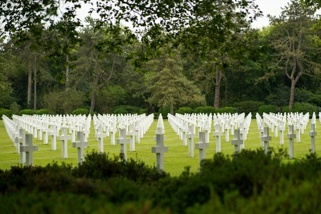

Visiting Normandy
Mont-Saint-Michel, the cliffs of Étretat, Honfleur harbour and the beaches of 6 June 1944: Normandy is the great getaway a few hours from Paris.
Photo: Alexander Van Steenberge / Unsplash
Normandy is home to some of the most visited sites in France: Mont-Saint-Michel, the chalk cliffs of Étretat, Honfleur’s Vieux Bassin and the D-Day beaches. Rouen, its capital, is 1 hour 20 from Paris by train.
The region can be visited all year round. Winter is the ideal season to avoid the crowds at Mont-Saint-Michel, and Rouen holds a Christmas market beneath its cathedral. Each guide gives opening hours, 2026 prices, access and our tips.
What to see in Normandy
-

Mont-Saint-MichelThe abbey on its islet, the medieval village and the great tides of the bay.
-

ÉtretatThe Porte d’Aval, the Needle and the clifftop paths of the Alabaster Coast.
-

HonfleurThe Vieux Bassin, France’s largest wooden church and the harbour that inspired Monet.
-

D-Day BeachesOmaha Beach, Pointe du Hoc and the American Cemetery, the places of 6 June 1944.
-
 Rouen
RouenMonet’s cathedral, the Gros-Horloge and the Christmas market, 1 hour 20 from Paris by train.